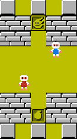
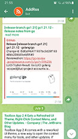
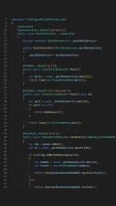

C#, Golang, Python, JavaScript, Typescript, SQL
HTML, CSS, ASPNETCORE MVC
Angularjs, React, Bootstrap, jQuery, Orchard CMS, Knockoutjs
Azure, AWS, Docker
Unity
Blender, Adobe Photoshop
Bingo Blitz is a free online mobile game app. Takes top ratings in its category. Has builds for most of the gaming platforms.
Project role: Senior Client Developer
Tech Stack: C#, TeamCity, Git, Kibana, Grafana and lots of in house solutions
Monitoring and management solution for traditional endpoints like servers, desktops, laptops, SNMP network devices, and printers. Single entry point for the IT administrators which includes all necessary tools for daily problems and tasks.
Project role: Team Dev Lead
Tech Stack: C#, ASP.NET MVC, TypeScript, React, Polymer, Jest, Enzyme, MS SQL, Git, Jenkins, Bash, C++
An innovative ad tech platform encompassing data-driven, automated solutions and services designed to greatly facilitate the buying and selling of advertising in the TV space. The system acts as a unified, end-to-end TV ad marketplace aiming to bring together advertisers, buyers, and TV stations across the United States. The platform offers real-time information on avails, seamless integration with rating providers, transparent order placement and sophisticated reporting for 100% process transparency.
Project role: Team Dev Lead
Tech Stack: C#, Golang, SignalR, Entity Framework, Dapper, WCF, gRPC, React, AngularJs, Jest, Enzyme, Yarn, MS SQL, PostgreSQL, ASPNETCORE MVC, MediatR, RabbitMQ, Azure DevOps, Datadog, Git, Docker, AWS S3, AWS EKS, AWS ECS, AWS S3
A highly customizable bookkeeping system with a set of advanced functional modules: user management, complex financial calculations, multi-user billings, tax calculations, invoicing, workload tracking, etc. The system is seamlessly integrated with the existing corporate ERP and bank API.
Project role: Senior Software Engineer
Tech Stack: C#, ASP.NET MVC, MS SQL, NHibernate, JavaScript, jQuery, Knockoutjs, Powershell, Jenkins
C#
TypeScript, Phaser
Golang, Postgres, Docker, Telegram
C#, ASP.NET Core, TypeScript, React, TestCafe, Mongo, Docker, Azure
Playtika is an well known product company oriented on mobile games. I'm working on top priority game called BingoBlitz as an C# client developer.
Position: Senior Client Developer.
Kaseya is a product company. I was working on one of the largest products which is called VSA or Remote Monitoring & Management. Development is based on .NET stack and modern frontend frameworks.
Position: Lead Software Developer.
Various outsourcing projects based on modern .NET stack and web technologies. Projects support on vanilla .NET stack. Internal knowledge transfer meetings and research activities.
Position: Senior Software Developer, Team Dev Lead.
Developing web-application for renewable resources monitoring and how its used. Application consists of: maps API, products catalog and expertise system for resource usage and payback estimation.
Developing windows application for Ministry of Emergency Situations. Application is used for air pollution monitoring.
Position: Software Developer.